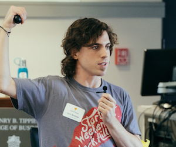

Hi, I'm Levi.
Professional problem solver.
Startup founder, freelancer, mentor, entrepreneur, geek.
You will work with me every step of the way with your mobile app idea.
I started Curiosity IO to build the next great app with only the most passionate founders.
If you are ready to make your idea a reality, let's talk.
I have been building mobile apps for startups since 2013 and a freelancer long before that.
I mentor dozens of startups around the country helping them build the best
mobile apps. Expect me to treat you the same.
When you work with me, our top priority will be the end user of the mobile app. I practice
User-Centered Design
where decisions are made based on the user experience of the mobile app. It only takes 1 second for
a user to uninstall your app. It wont be because of a bad user experience.


This is what you can expect from me.
- Intuitive design
- I take a lot of pride in my craft. Each project that I create is built from scratch.
I study the Apple and
Google
design guidelines to assert that each mobile app looks and feels their very best.
I believe that if your mobile app requires a tutorial, you need to redesign it.
Your iPhone users will feel familiar with my iPhone apps and Android users will
feel familiar with my Android apps. - Bug-free apps
- Your app will have issues. There is no such thing as completely bug-free software.
To get as close as we can, every time that one of your users has an issue with your
mobile app, I get notified, fix the issue, and release a fix all without you
realizing it.
- Build what provides the most value
- My apps are built from scratch for your end user. Your mobile app will look good, run
fast, and be fun to use.
I am a startup founder, like yourself, and I care most about providing value to the user.
In fact, the very first conversation we have together we will consider if a mobile app
is the best solution to solve your user's problem.